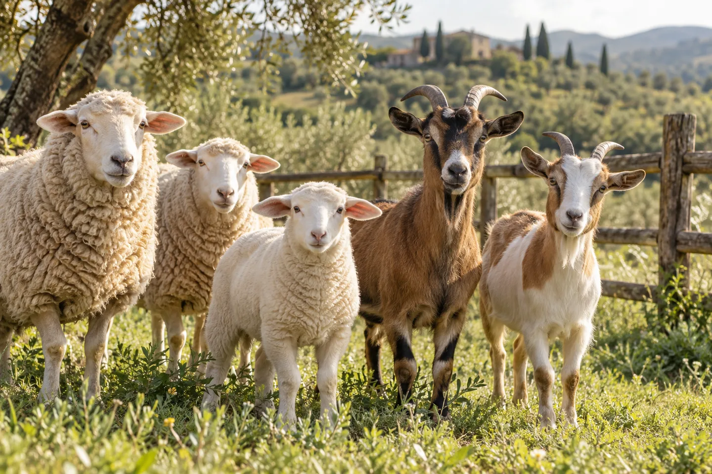

A broader view of animal wellbeing.
Valerian’s presentation brings together veterinary injectables across parasite care, supportive care and anti-infective categories. Its animal-health perspective focuses on farm animals, livestock and horses. This website helps visitors understand the supplied portfolio, explore care topics and prepare informed product enquiries.
What you can explore here
The catalogue introduces NITROZAN, PhosphoVal 20%, OxyVal L.A, DIPHENEX, EroxVal 10%, Valmectin Super, Orvibion and Diclorix. Each has a dedicated product page. Care guides cover cattle, sheep, goats, horses and camels, while making clear that inclusion in an educational care section does not establish a product’s authorisation for that species.
Information for veterinary teams and animal-care professionals
Veterinarians, farm teams and professional buyers need different levels of information. A product overview helps orient a discussion; the current authorised leaflet supports prescribing; batch and supply documentation support procurement and traceability. The enquiry pathway helps visitors state exactly which information they need.
A company profile built on verifiable details
A credible company story should be supported by dated corporate and manufacturing documentation. Rather than assigning an unverified founding year, facility history or product launch date, this website directs those enquiries to the official company profile and product-documentation request. Certification and registration claims require current evidence for the relevant market.

From interest to an informed enquiry
Start with a product or a care topic, read the available information, then prepare a request that includes your organisation, region and the documents you need. Questions about product suitability, prescribing and treatment should be discussed with the attending veterinarian.